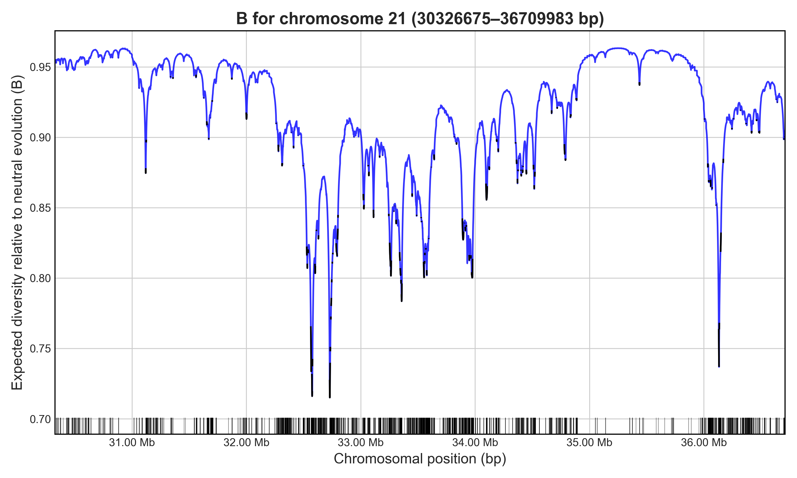

Calculate Region B-map
Bvalcalc --region chr1:1-1000000 --params Params.py --bedgff CDS.bed
- --region [CHR:START-END]
Calculate a B-map for a specified chromosomal region, considering linked and unlinked effects of selection from all conserved elements across the genome.
Core Arguments
- --params [path/to/YourParams.py]
Path to a Python file defining population genetic parameters, see here for accessing pre-built templates, Generate Parameters, and here for adjusting parameters to new species/populations, Tailoring Parameters.
- --bedgff [path/to/example.bed]
Path to an annotation file of selected elements, in BED, GFF3 or CSV format (CHR,START,END)
Recommended Arguments
- --rec_map [path/to/rec_map.csv]
Optional recombination (crossover) map in CSV format (CHR,START,RATE), where “RATE” is a multiplication factor for
rin the parameters file. Note that recombination rates are averaged over chunks.- --gc_map [path/to/gc_map.csv]
Optional gene conversion initiation rate map in CSV format (CHR,START,RATE), where “RATE” is a multiplication factor for
gin the parameters file. Note that the same map can be used for crossover and gene conversion rates, rates are averaged over chunks.- --pop_change
If included, compute current B (
Bcur) under a step population size change, as described in Johri et al. (2021). Note thatBcurandtime_of_changeshould be set in the parameters file when active.
Optional Arguments
- --out [path]
Write B-values to a CSV file with the specified path (must also provide
--out_binsize)- --out_binsize [int]
Bin size to average B-values in the CSV output, required if
--outis used.- --plot [path]
Output path for a genome-wide or region B-value plot (default: genome_plot.png)
- --neutral_only
If used with
--plot, only neutral sites will be shown in the plot- --gamma_dfe
If included, use a gamma distribution to define the DFE (instead of fixed
f0,f1,f2,f3). Note thatmean,shapeandproportion_synonymousshould be set in the parameters file when active.- --constant_dfe
If included, use a constant fixed
svalue as the DFE of selected sites (instead of fixedf0,f1,f2,f3). Note thatsandproportion_synonymousshould be set in the parameters file when active.- --hri
If included, will enable post-hoc calculation of B under HRI (B’; Becher and Charlesworth 2025), for low recombination regions. By default, classic B values are used in these regions.
- --prior_Bmap [path/to/prior_Bmap.csv]
Optional prior B-value map (.csv format). Used to multiply the newly calculated B-values by a per-site prior (e.g. for regions under different selection parameters). Format:
Chromosome,Start,B.- --chunk_size [int]
Size of chunks to process in each B calculation (default:
20000). It may be useful to increase this in large chromosomes with sparse selection for tractability, though consider how this may affect analysis in conjunction with the number of precise_chunks.- --precise_chunks [int]
Number of chunks on either side of a focal chunk to calculate precisely (default:
3). Increasing this beyond the default will lead to more precise results though reduces tractability, consider how this may affect analysis in conjunction with the chunk_size.- --verbose
Print per-chunk processing summaries (default: False)
- --quiet
Suppress console output
Example
Bvalcalc --region 21:30326675-36709983 \
--bedgff exons.accessible.21.bed \
--params HumanParams.py \
--out Bvalues_chr21_region.csv \
--out_binsize 1000 \
--plot B_chr21_region.png
# Cumulative length of calculated region under selection: 724516bp (11.35%)
# Cumulative length of chromosome under selection: 3279253bp (7.02%)
# Mean B of neutral sites across specified region: 0.9192038071047087
Calculates a B-map for the specified ~6 Mb region on human chromosome 21 considering BGS from exons across the accessible region, plotting the output. Output of B values in 1 kb bins for the region will be saved. In this case, unlinked B will not be applied because only the chromosome 21 exons were provided.
Notes
A caveat to the --region and --genome modes is that by default they combine and simplify distant elements in discrete chunks which can slightly change the distance of distant conserved elements when
calculating B. The default chunk size is 20kb and the window within which calculations are perfectly precise is three chunks in each direction (140kb total). This allows for vastly improved performance
and typically will not result in directional biases of B estimates for most analyses.
To achieve more exact results you can specify the size of the chunks with --chunk_size, and the size of the window to
perform perfectly precise calculations with --precise_chunks, though this will come at the cost of perfomance so consider using HPC resources or limiting to a specific region with --region.